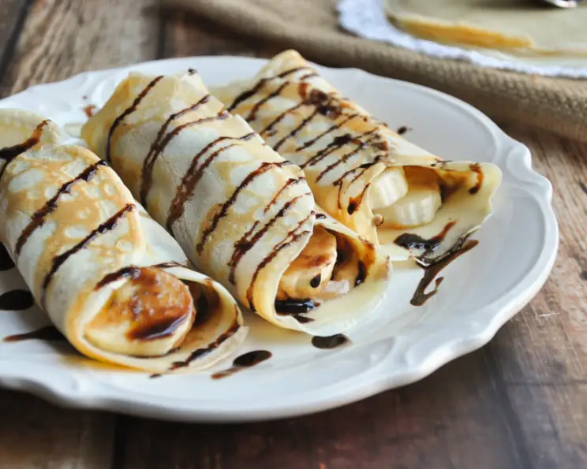

Crepes

These homemade crepes are ultra thin and delicate with the most buttery crisp edges. Easy to make with just a blender and regular skillet, they’re ready for your choice of sweet or savory fillings and toppings. No special pans required for these French-style pancakes. And, best of all, you only need 8 basic ingredients!
Ingredients
- 3 Tablespoons (43g) unsalted butter, plus 3–4 more Tablespoons (43g to 56g) for the pan
- 1 cup (125g) all-purpose flour (spooned & leveled)
- 1 Tablespoon granulated sugar
- 1/8 teaspoon salt
- 3/4 cup (180ml) whole milk, at room temperature
- /2 cup (120ml) water, at room temperature
- 2 large eggs, at room temperature
- 1 and 1/2 teaspoons pure vanilla extract
Methods
- Melt 3 Tablespoons of butter in the microwave or on the stove. Cool for about 5 minutes before using in the next step. The remaining butter is for the skillet.
- Combine the cooled melted butter, flour, sugar, salt, milk, water, eggs, and vanilla in a blender or large food processor. If you don’t have a blender or food processor, use a large mixing bowl and whisk by hand. Blend on medium-high speed for 20-30 seconds until everything is combined. The mixture will be silky-smooth and the consistency of cream. Cover the blender tightly or pour into a medium bowl, cover tightly, and chill in the refrigerator for 30-60 minutes and up to 1 day. (After refrigerating, if the batter looks separated, give it a quick stir before cooking in the next step.)
- Cook the crepes: Use the remaining butter for greasing the pan between each crepe. Place an 8-inch skillet over medium heat and generously grease it with some of the reserved butter. If you don't have a skillet this size, use a larger one, but make sure you keep the crepes thin. Once the skillet is hot, pour 3-4 Tablespoons (closer to 3 is best) of batter into the center of the pan. Tilt/twirl the pan so the batter stretches as far as it will go. The thinner the crepe, the better the texture. Cook for 1-2 minutes, then flip as soon as the bottom is set. Don't wait too long to flip crepes or else they will taste rubbery. Cook the other side for 30 seconds until set. Transfer the cooked crepe to a large plate and repeat with the remaining batter, making sure to butter the pan between each crepe. If desired, separate each crepe with parchment paper so they do not stick together. If you're using enough butter in your pan, though, the crepes shouldn't stick.
- Fill the crepes. I love serving them warm, but they're excellent at room temperature too. See my filling suggestions above this recipe or my recipe notes below. Place a few spoonfuls of your filling ingredient(s) in the center of the crepe. Fold both sides over the filling. Crepes are delicious with toppings, too, such as a drizzle of melted chocolate, melted peanut butter, or a dusting of confectioners' sugar. Or try a savory sauce like pesto or hollandaise.
- Leftover unfilled crepes remain fresh in an airtight container in the refrigerator for 1 day or in the freezer for 1 month. Freeze each between small sheets of parchment paper so they don't stick. (I usually layer them with parchment and freeze in a large zipped-top bag.) Thaw at room temperature before filling/enjoying. See reheating instructions in the recipe Notes below.